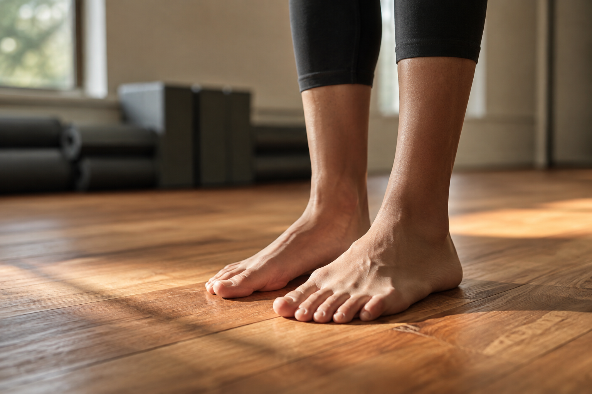

瑜伽的說法哪些是真的，哪些只是行銷噱頭？排毒流汗、一夕歸位與柔軟度迷思破解

- 「流汗排毒」的生理神話：汗液中 99% 是水分與無機鹽，人體真正的排毒中樞是肝臟酵素與腎臟過濾系統，過度高溫暴汗只會造成脫水與電解質紊亂。
- 「一夕歸位」的力學謊言：骨骼受肌筋膜牽拉與大腦基底核動作程式支配，單次咔嗒聲僅為關節腔空化氣泡破裂，沒有長期神經肌肉再教育，骨骼必將復發。
- 「越軟越好」的退化風險：缺乏深層肌力保護的被動韌帶過度拉伸，會引發「關節不穩定症（Hypermobility）」，導致軟骨異常磨損。
- 神經與血管紅旗：頸椎後仰時出現眩暈、複視或言語不清，高度警惕椎基底動脈供血不足（VBI），嚴禁繼續硬練，必須立即送醫。
打開社群媒體與坊間健身廣告，「暴汗深層排毒」、「三天消除假胯寬」、「一堂課骨盆神蹟歸位」、「柔軟度是唯一長壽指標」等聳動字眼層出不窮。許多人在被這些美妙承諾吸引進教室後，要麼遭遇挫折放棄，要麼在盲目追求誇張角度中拉傷了韌帶與關節唇。瑜珈是一門流傳數千年的精深身心科學，但它絕非無所不能的魔法；撥開行銷包裝的迷霧，用現代運動醫學與人體解剖生理學還原真相，才是保護自己身體的第一道防線。
迷思一：流汗大暴汗，是在替身體排出深層毒素？
在許多熱瑜珈或高溫教室中，「排出體內沉積重金屬與毒素」常被作為主打訴求。然而在人體生理學上，這是一個徹頭徹尾的概念偷換：
- 汗腺的單一散熱使命：人體分佈著數百萬個小汗腺（Eccrine Glands），其唯一核心生理功能是「散熱與維持核心體溫恆定」。汗液分析顯示，其成分中 99% 以上是純水，其餘 1% 為鈉、鉀、氯等礦物質及極微量的尿素與乳酸。汗腺完全缺乏分解複雜大分子毒素的生化酵素系統。
- 真正的排毒中樞：肝臟與腎臟：人體內部的藥物、環境毒素與代謝廢物，99.9% 仰賴肝臟細胞的細胞色素 P450 酵素系統進行生物轉化，使其水溶性增加，隨後由腎臟腎絲球濾過隨尿液排出，或由膽汁排入腸道隨糞便排出。
- 過度脫水的生理代價：在封閉高溫環境下刻意大量脫水，若未精確補充電解質，會導致血容量銳減、血液黏稠度激增，引發心悸、姿態性低血壓與熱衰竭。瑜珈的價值在於促動微血管循環，而非把身體當成烤箱脫水。
迷思二：骨盆歪斜、脊椎側彎，能靠幾堂課「一夕歸位」？
許多推拿按摩或速成課程常宣稱：「只要透過特殊手法或幾個深層體位法，能瞬間把歪斜的骨盆『喬回原位』。」這忽視了人體結締組織與神經學的物理法則：
- 咔嗒聲的物理真相（Cavitation）：關節被動牽拉時發出的脆響，在物理學上稱為「空化現象（Cavitation）」——關節腔內部負壓驟變使二氧化碳氣泡瞬間崩解的聲響，並非骨頭「卡進卡榫」的聲音，聲響大小與結構是否復位毫無因果關係。
- 戴維斯定律與肌肉失衡：骨骼本身是沒有主動移動能力的被動槓桿。如果骨盆前傾或旋轉，代表單側髂腰肌、股直肌已長年短縮痙攣，而對側臀大肌與腹橫肌已離心失活。即使外力強行將骨盆擺正，神經系統與短縮筋膜會在數小時內將骨骼重新拉回原先的失衡位置。
- 真正的矯正是「神經肌肉再教育」：人體需要的是透過主動收縮弱勢肌、離心拉長強勢肌，並透過大腦基底核反覆練習中立位力線，經過數個月的膠原蛋白重塑，骨骼才能真正穩定維持在中立位。
迷思三：柔軟度越大越健康，天生筋軟是練瑜珈的天賦？
看見別人能將雙腿劈成 180 度直線，甚至反折身體用頭碰腳後跟，許多人投以羨慕的眼光，甚至強迫自己硬壓。然而在骨科運動醫學中，過度的柔軟往往是結構性災難的開端：
- 良性關節過動症候群（BJHS）：天生不需要暖身就能輕易反折關節的人，常符合貝頓氏評分（Beighton Score）過高標準。這類人群的基因通常編碼出膠原蛋白交聯度較低的「過軟結締組織」，其關節囊與被動韌帶極度鬆弛，無法發揮骨骼卡榫的被動穩定功能。
- 軟骨與關節唇的微磨損悲劇：關節若缺乏肌肉主動收縮的力量保護，每次活動都會在大角度下發生「微小半脫位（Micro-subluxation）」。股骨頭會在髖臼內產生異常剪切滑動，導致髖臼唇撕裂、盂唇受損，在 30、40 歲便早發嚴重的退化性骨關節炎。
- 健康的核心是「可控的主動活動度（AROM）」：健康的關節不是無限制地拉鬆，而是在每個活動角度極限下，周圍的肌肉都具備足夠的離心與等長力量去「主動穩定」它。
迷思四：瑜珈是絕對溫和的運動，永遠不會受傷？
「瑜珈受傷」在運動醫學門診中絕非罕見病例。最常遭遇傷害的部位包括：
- 頸椎過度屈曲與後仰：在肩立式或頭倒立中，將全身 50 至 70 公斤的重力完全壓在脆弱的 C5–C7 頸椎上，極易引發頸椎間盤突出與神經根水腫。
- 強行盤腿引發膝關節半月板撕裂：在雙蓮花坐姿中，若髖關節外旋活動度不足，學員常藉由扭轉膝關節來借角度，導致脛股關節產生劇烈旋轉剪切力，硬生生絞碎內側半月板後角。
- 膕繩肌坐骨端撕裂（Yoga Butt）：在無屈膝保護下，長期強行用上身自重向前猛壓，使坐骨結節處的膕繩肌共同肌腱承受極限張力，引發慢性難癒的近端肌腱炎。
回歸本質：現代瑜珈與壁繩輔助的真實科學價值
破除上述神話，絕非否定瑜珈的深遠價值。現代功能性瑜珈在經過運動科學梳理後，能提供一般運動難以取代的核心助益：
- 本體感覺與大腦地圖校準：赤腳扎根喚醒足底二十萬個機械受器，讓大腦精準重構下肢對位感知。
- 迷走神經張力與呼吸整合：透過 4-7-8 橫膈膜深呼吸，刺激副交感神經，顯著降低全身發炎反應與皮質醇水平。
- 壁繩 30%–70% 重力卸載牽引：藉由剛性牆面與登山動力繩，讓脊椎在「負壓無衝擊」的環境下減壓軸向延展，既不強行扭折關節，又能精準喚醒深層多裂肌與腹橫肌。
遠離誇大話術，用科學客觀視角看懂自己的身體
不想再盲目跟風拉筋、擔心越練越傷？鑫彥瑜珈提供首次 NT$299 AI 體態檢測，現場以 2D 幾何力線精準量測，由專業老師當面為您解讀關節活動度與肌力平衡，給予真正踏實安全的運動指引。
預約首次 NT$299 AI 體態檢測（含關節活動度科學評估）神經血管急症紅旗警訊（Red Flags）
生命安全極度嚴肅：在任何運動或伸展中，若身體出現以下危險徵兆，屬於急性神經血管壓迫或撕裂，請立即停止並就醫急診：
1. 椎基底動脈供血不足（VBI 警訊）：在頭頸後仰或大角度旋轉時，突發嚴重眩暈、天旋地轉、眼前發黑、看東西出現雙影（複視 Diplopia）、說話大舌頭口齒不清（構音障礙 Dysarthria）或步態嚴重失調（高度警惕椎動脈壓迫或椎動脈剝離，切勿強行後仰頸部！）。
2. 急性關節積血與脫位感：關節在扭轉瞬間發出清脆爆裂聲，隨後數分鐘內關節劇烈腫脹發亮、皮下瘀血，且無法承重（需排除十字韌帶或側副韌帶急性斷裂）。
3. 馬尾症候群（Cauda Equina）：下背或骨盆深處劇烈刺痛，伴隨會陰部鞍區麻木失去知覺、大小便失禁或排尿排便極度困難（此為脊髓神經壓迫急症，必須在 24–48 小時內進行神經外科減壓手術）。
常見問題
高溫瑜珈大汗淋漓，真的能排出體內深層重金屬與毒素嗎？
這在生理學上純屬誇大行銷。人體排汗的成分中，99% 以上是純水與鈉、鉀、氯等微量電解質。人體真正負責分解毒素與代謝廢物的是肝臟的細胞色素 P450 酵素系統，以及腎臟的腎絲球濾過作用。高溫出汗是人體的散熱體溫調節機制，若過度脫水且未及時補充電解質，反而會加重心臟負擔並造成血液濃縮，絕無「深層排毒」的神奇療效。
宣稱骨盆歪斜或脊椎側彎能「一兩堂課瞬間喬正」，是真的嗎？
骨骼位置是由周圍肌肉張力平衡、筋膜長度與大腦運動皮質控制共同決定的。單次的外力擠壓或咔嗒聲響，頂多是暫時改變關節腔內氣壓（滑液氣泡破裂）或誘發暫時性神經抑制。如果不經過數週甚至數月的神經肌肉再教育與筋膜膠原重塑，一旦回到日常久坐環境，舊有的失衡肌力會立刻把骨骼拉回原位，根本不存在「一夕永久歸位」的神話。
練習瑜珈時，柔軟度是不是越大越好？天生筋很軟是不是優勢？
完全不是。醫學上將天生關節過度鬆弛稱為「良性關節過動症候群（BJHS / Beighton 評分過高）」。天生筋軟者通常是關節囊與韌帶中的膠原蛋白過於鬆散，天生缺乏被動穩定性。若這類人繼續盲目追求劈腿、反折等極限角度，而沒有同步強化深層穩定肌肉群，關節軟骨與關節唇極易在日常負重下發生微小磨損與早期關節退化。
瑜珈是溫和伸展運動，練習過程是不是絕對不會造成運動傷害？
只要涉及動作控制與重力對抗，任何運動都存在傷害風險。在瑜珈中，若強行用手扳腳做深度前彎容易造成膕繩肌坐骨端撕裂；在沒有胸椎活動度下硬做大後彎易引發腰椎峽部崩裂；而在頸部過度後仰轉動時強行支撐更可能壓迫椎基底動脈。正因如此，合格的教學必須依循人體解剖力線，並適時藉由壁繩卸載降低關節受壓。
在瑜珈練習中出現哪些危險徵兆，必須立即終止並就醫排查？
若在頸椎後仰或大角度旋轉時突發「眩暈天旋地轉、視力模糊複視、說話大舌頭口齒不清或步態失調（高度懷疑椎基底動脈供血不足 VBI 甚至頸動脈剝離）」；或是關節急性劇痛伴隨關節積血大腫脹、患肢神經放射麻木無力，必須立即終止練習並前往急診或專科診療！